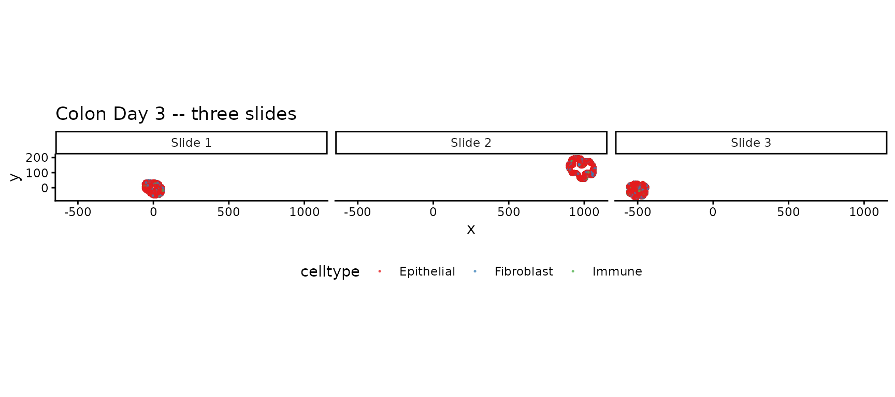
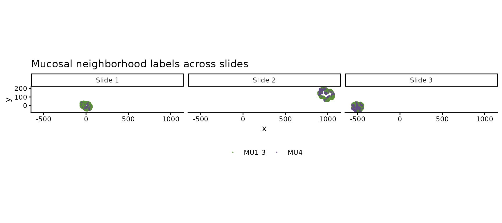
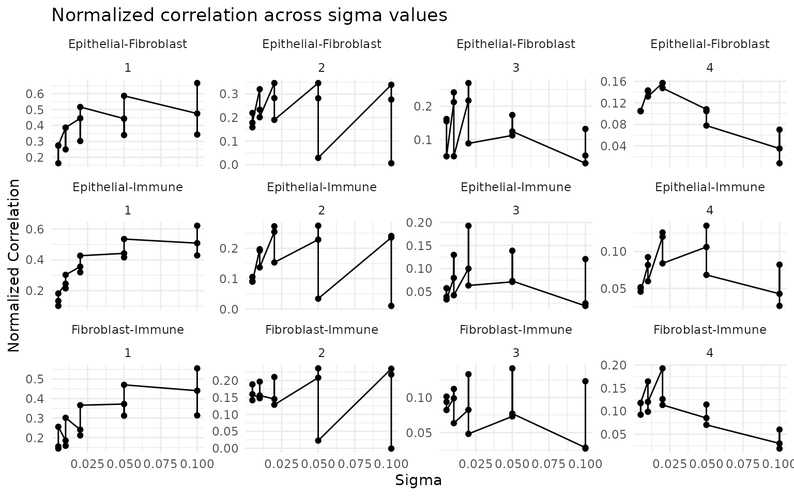
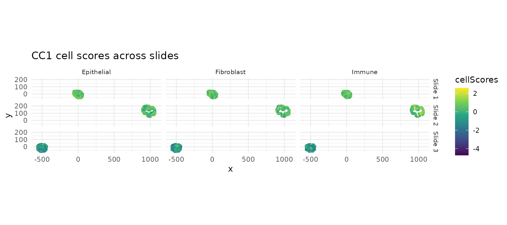
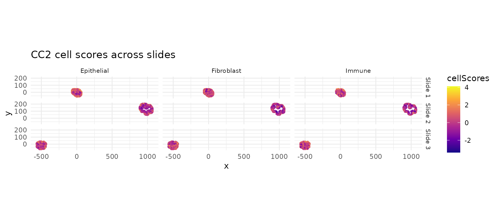
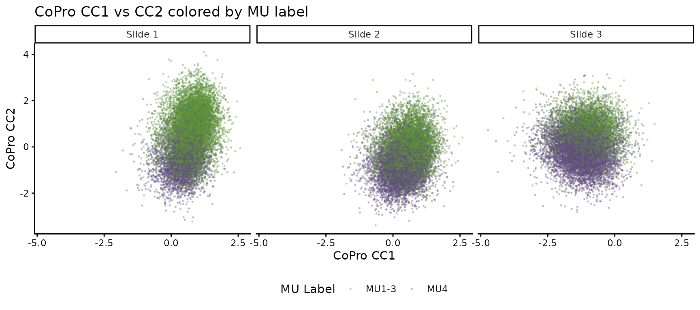
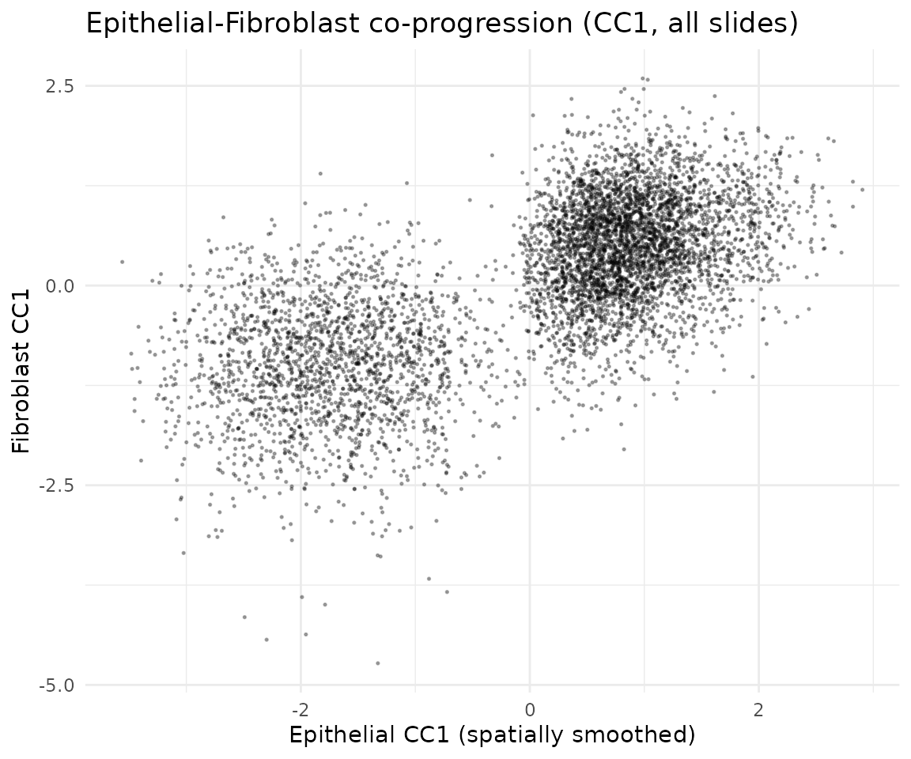
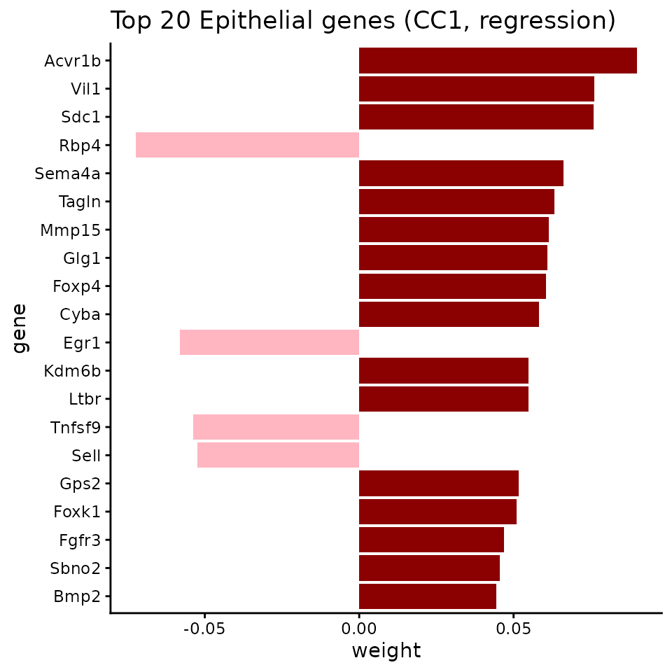

Multi-slide joint analysis (Colon Day 3)
2026-05-10
Source:vignettes/colon_d3_multi_slide.Rmd
colon_d3_multi_slide.RmdOverview
When multiple tissue slides are available from the same condition,
CoPro can analyze them jointly using
newCoProMulti. Joint analysis pools spatial relationships
across slides, yielding more robust co-progression axes than
single-slide analysis. This is especially valuable when individual
slides may capture only part of the tissue heterogeneity.
This vignette walks through the full multi-slide workflow using three colon organoid Day 3 slides:
- Create a
CoProMultiobject withnewCoProMulti - Run the standard CoPro pipeline (PCA, kernel, CCA, scores)
- Visualize per-slide results
- Assess cross-slide consistency via score transfer
- Validate against independently derived mucosal neighborhood labels
For a complementary example showing the
reference-plus-transfer workflow (train on one slide,
transfer to others), see the colon_d9_multi_slide
vignette.
Download and load data
data_path <- copro_download_data("colon_d3_multi")## Downloading copro_colon_d3_multi.rds from GitHub Release 'data-v1'...## Downloaded to: /home/runner/.cache/R/CoPro/copro_colon_d3_multi.rds## Slides: 092421_D3_m1_1_slice_1, 092421_D3_m1_1_slice_3, 092421_D3_m2_1_slice_1## Total cells: 37930## Genes: 891
table(dat$slideID)##
## 092421_D3_m1_1_slice_1 092421_D3_m1_1_slice_3 092421_D3_m2_1_slice_1
## 11666 13870 12394Visualize the tissue
Cell types across slides
plot_df <- data.frame(
x = dat$locationData$x,
y = dat$locationData$y,
celltype = dat$cellTypes,
slide = dat$slideID
)
# Short slide labels for plotting
slide_labels <- setNames(
paste0("Slide ", seq_along(dat$selectedSlides)),
dat$selectedSlides
)
plot_df$slide_label <- slide_labels[plot_df$slide]
ggplot(plot_df, aes(x = x, y = y, color = celltype)) +
geom_point(size = 0.3, alpha = 0.6) +
scale_color_manual(values = c("Epithelial" = "#E41A1C",
"Fibroblast" = "#377EB8",
"Immune" = "#4DAF4A")) +
facet_wrap(~ slide_label) +
coord_fixed() +
ggtitle("Colon Day 3 -- three slides") +
theme_classic() +
theme(legend.position = "bottom")
Mucosal neighborhood (MU) labels
Each slide has been independently annotated with mucosal neighborhood labels. MU4 marks an inflammation-associated microenvironment:
mu_df <- data.frame(
x = dat$locationData$x,
y = dat$locationData$y,
MU = dat$metaData$Leiden_neigh,
slide = dat$slideID
)
mu_df$slide_label <- slide_labels[mu_df$slide]
mu_df$MU_grouped <- ifelse(mu_df$MU %in% c("MU1", "MU2", "MU3"),
"MU1-3", as.character(mu_df$MU))
mu_df <- mu_df[mu_df$MU_grouped %in% c("MU1-3", "MU4"), ]
mu_df$MU_grouped <- factor(mu_df$MU_grouped, levels = c("MU1-3", "MU4"))
mu_colors <- c("MU1-3" = "#5c9137", "MU4" = "#614b83")
ggplot(mu_df, aes(x = x, y = y, color = MU_grouped)) +
geom_point(size = 0.3, alpha = 0.6) +
scale_color_manual(values = mu_colors) +
facet_wrap(~ slide_label) +
coord_fixed() +
ggtitle("Mucosal neighborhood labels across slides") +
theme_classic() +
theme(legend.position = "bottom", legend.title = element_blank())
Create a multi-slide CoPro object
newCoProMulti takes a slideID vector that
tells CoPro which cells belong to which slide. The pipeline then
computes distance and kernel matrices within each slide
(cells on different slides are never treated as spatial neighbors),
while CCA optimizes a shared set of weights across all slides
jointly.
cell_types <- c("Epithelial", "Fibroblast", "Immune")
multi_obj <- newCoProMulti(
normalizedData = dat$normalizedData,
locationData = dat$locationData,
metaData = dat$metaData,
cellTypes = dat$cellTypes,
slideID = dat$slideID
)
multi_obj <- subsetData(multi_obj, cellTypesOfInterest = cell_types)Run the CoPro pipeline
The pipeline steps are identical to single-slide analysis. Internally, CoPro handles the multi-slide structure automatically—kernel matrices are block-diagonal (no cross-slide spatial interactions), and CCA finds weights that maximize the pooled canonical correlation.
multi_obj <- computePCA(multi_obj, nPCA = 40, center = TRUE, scale. = TRUE)## Performing PCA for cell type: Epithelial## Data centered and/or scaled## PCA computed for cell type: Epithelial## Performing PCA for cell type: Fibroblast## Data centered and/or scaled## PCA computed for cell type: Fibroblast## Performing PCA for cell type: Immune## Data centered and/or scaled## PCA computed for cell type: Immune
multi_obj <- computeDistance(multi_obj, distType = "Euclidean2D")## normalizeDistance = TRUE: low-percentile distance will be normalized across all slides and scaled to 0.01.## Computing pairwise distances for slide: 092421_D3_m1_1_slice_1## Slide: 092421_D3_m1_1_slice_1, Pair: Epithelial - Fibroblast## 0% 25% 50% 75% 100%
## 0.9705014 37.5605433 59.8000973 82.3149151 148.3187211## Slide: 092421_D3_m1_1_slice_1, Pair: Epithelial - Immune## 0% 25% 50% 75% 100%
## 1.044265 37.159523 59.872983 82.261799 147.622508## Slide: 092421_D3_m1_1_slice_1, Pair: Fibroblast - Immune## 0% 25% 50% 75% 100%
## 1.036319 37.135140 59.598056 82.079873 147.257437## Computing pairwise distances for slide: 092421_D3_m1_1_slice_3## Slide: 092421_D3_m1_1_slice_3, Pair: Epithelial - Fibroblast## 0% 25% 50% 75% 100%
## 1.057877 56.640926 89.810647 122.989128 194.939883## Slide: 092421_D3_m1_1_slice_3, Pair: Epithelial - Immune## 0% 25% 50% 75% 100%
## 1.099256 56.453589 88.828288 121.616829 194.552898## Slide: 092421_D3_m1_1_slice_3, Pair: Fibroblast - Immune## 0% 25% 50% 75% 100%
## 1.229139 56.785444 89.380375 123.533484 194.707180## Computing pairwise distances for slide: 092421_D3_m2_1_slice_1## Slide: 092421_D3_m2_1_slice_1, Pair: Epithelial - Fibroblast## 0% 25% 50% 75% 100%
## 1.009073 37.737153 59.369878 81.275043 142.566671## Slide: 092421_D3_m2_1_slice_1, Pair: Epithelial - Immune## 0% 25% 50% 75% 100%
## 1.05659 37.90239 59.63997 81.95566 143.00729## Slide: 092421_D3_m2_1_slice_1, Pair: Fibroblast - Immune## 0% 25% 50% 75% 100%
## 1.060916 38.454915 60.622840 83.243095 142.296317## Global distance scaling factor: 0.010304
sigma_choice <- c(0.005, 0.01, 0.02, 0.05, 0.1)
multi_obj <- computeKernelMatrix(multi_obj, sigmaValues = sigma_choice)## Computing pairwise kernel matrix for 3 cell types across 3 slides
## current sigma value is 0.005
## current sigma value is 0.01
## current sigma value is 0.02
## current sigma value is 0.05
## current sigma value is 0.1
multi_obj <- runSkrCCA(multi_obj, scalePCs = TRUE, maxIter = 500, nCC = 4)## Running skrCCA [1/5] for sigma = 0.005 ...## Convergence reached at 15 iterations (Max diff = 6.300e-06 )## [1] "Convergence reached at 11 iterations (Max diff = 6.444e-06 )"
## [1] "Convergence reached at 66 iterations (Max diff = 8.890e-06 )"
## [1] "Convergence reached at 7 iterations (Max diff = 5.039e-06 )"## Running skrCCA [2/5] for sigma = 0.01 ...## Convergence reached at 9 iterations (Max diff = 6.447e-06 )## [1] "Convergence reached at 11 iterations (Max diff = 6.704e-06 )"
## [1] "Convergence reached at 50 iterations (Max diff = 8.788e-06 )"
## [1] "Convergence reached at 6 iterations (Max diff = 4.469e-06 )"## Running skrCCA [3/5] for sigma = 0.02 ...## Convergence reached at 8 iterations (Max diff = 4.950e-06 )## [1] "Convergence reached at 9 iterations (Max diff = 5.275e-06 )"
## [1] "Convergence reached at 26 iterations (Max diff = 9.623e-06 )"
## [1] "Convergence reached at 5 iterations (Max diff = 1.676e-06 )"## Running skrCCA [4/5] for sigma = 0.05 ...## Convergence reached at 10 iterations (Max diff = 9.913e-06 )## [1] "Convergence reached at 5 iterations (Max diff = 8.622e-06 )"
## [1] "Convergence reached at 17 iterations (Max diff = 8.759e-06 )"
## [1] "Convergence reached at 5 iterations (Max diff = 6.842e-06 )"## Running skrCCA [5/5] for sigma = 0.1 ...## Convergence reached at 9 iterations (Max diff = 2.663e-06 )## [1] "Convergence reached at 5 iterations (Max diff = 2.920e-06 )"
## [1] "Convergence reached at 9 iterations (Max diff = 9.487e-06 )"
## [1] "Convergence reached at 8 iterations (Max diff = 3.325e-06 )"## skrCCA finished 5 sigma value(s) in 26.6 s.## Optimization succeeded for 5 sigma value(s): sigma_0.005, sigma_0.01, sigma_0.02, sigma_0.05, sigma_0.1
multi_obj <- computeNormalizedCorrelation(multi_obj)## Calculating spectral norms (can take time)...## Finished calculating spectral norms.
multi_obj <- computeGeneAndCellScores(multi_obj)Select optimal sigma
ncorr <- getNormCorr(multi_obj)
ggplot(ncorr, aes(x = sigmaValues, y = normalizedCorrelation)) +
geom_point() +
geom_line() +
facet_wrap(~ ct12 + CC_index, scales = "free_y") +
xlab("Sigma") +
ylab("Normalized Correlation") +
ggtitle("Normalized correlation across sigma values") +
theme_minimal()
sigma_opt <- 0.01 # adjust based on the ncorr plot aboveVisualize cell scores per slide
A key advantage of multi-slide analysis: the same CCA weights produce cell scores on every slide. Consistent spatial patterns across slides indicate a robust biological signal.
CC1 scores across all slides
cs <- getCellScoresInSitu(multi_obj, sigmaValueChoice = sigma_opt,
ccIndex = 1)
# Add slide labels
cs$slide <- multi_obj@metaDataSub$Slice_ID[
match(rownames(cs), rownames(multi_obj@metaDataSub))
]
if (is.null(cs$slide)) {
cs$slide <- multi_obj@metaDataSub[
match(paste(cs$x, cs$y), paste(multi_obj@locationDataSub$x,
multi_obj@locationDataSub$y)),
"Slice_ID"
]
}
cs$slide_label <- slide_labels[cs$slide]
ggplot(cs, aes(x = x, y = y, color = cellScores)) +
geom_point(size = 0.5) +
scale_color_viridis_c() +
facet_grid(slide_label ~ cellTypesSub) +
coord_fixed() +
ggtitle("CC1 cell scores across slides") +
theme_minimal() +
theme(strip.text = element_text(size = 8))
CC2 scores across all slides
cs2 <- getCellScoresInSitu(multi_obj, sigmaValueChoice = sigma_opt,
ccIndex = 2)
cs2$slide <- cs$slide
cs2$slide_label <- cs$slide_label
ggplot(cs2, aes(x = x, y = y, color = cellScores)) +
geom_point(size = 0.5) +
scale_color_viridis_c(option = "C") +
facet_grid(slide_label ~ cellTypesSub) +
coord_fixed() +
ggtitle("CC2 cell scores across slides") +
theme_minimal() +
theme(strip.text = element_text(size = 8))
CoPro axes vs MU labels
The CoPro axes are learned in a fully unsupervised manner. As a validation, we check whether the unsupervised CC1/CC2 axes separate the independently derived MU labels. We plot CC1 vs CC2 for each slide, colored by MU label:
lmeta <- multi_obj@metaDataSub
lmeta$cc1 <- lmeta[, paste0("cellScore_sigma_", sigma_opt, "_cc_index_1")]
lmeta$cc2 <- lmeta[, paste0("cellScore_sigma_", sigma_opt, "_cc_index_2")]
lmeta$MU_grouped <- ifelse(lmeta$Leiden_neigh %in% c("MU1", "MU2", "MU3"),
"MU1-3",
ifelse(lmeta$Leiden_neigh == "MU4", "MU4", NA))
lmeta <- lmeta[!is.na(lmeta$MU_grouped), ]
lmeta$slide_label <- slide_labels[lmeta$Slice_ID]
ggplot(lmeta, aes(x = cc1, y = cc2, color = MU_grouped)) +
geom_point(size = 0.3, alpha = 0.3) +
scale_color_manual(values = mu_colors) +
facet_wrap(~ slide_label) +
labs(x = "CoPro CC1", y = "CoPro CC2", color = "MU Label") +
ggtitle("CoPro CC1 vs CC2 colored by MU label") +
theme_classic() +
theme(legend.position = "bottom")
MU4 (inflammation) occupies a distinct region of the CoPro score space on each slide, confirming that the jointly learned axes capture biologically meaningful structure that generalizes across slides.
Cross-type correlation
df_cc1 <- getCorrTwoTypes(multi_obj,
sigmaValueChoice = sigma_opt,
cellTypeA = "Epithelial",
cellTypeB = "Fibroblast",
ccIndex = 1
)
ggplot(df_cc1) +
geom_point(aes(x = AK, y = B), size = 0.3, alpha = 0.3) +
xlab("Epithelial CC1 (spatially smoothed)") +
ylab("Fibroblast CC1") +
ggtitle("Epithelial-Fibroblast co-progression (CC1, all slides)") +
theme_minimal()
Gene scores
multi_obj <- computeRegressionGeneScores(multi_obj, sigma = sigma_opt)## Computed regression gene scores for sigma=0.01, cellType='Epithelial'## Computed regression gene scores for sigma=0.01, cellType='Fibroblast'## Computed regression gene scores for sigma=0.01, cellType='Immune'Top genes for CC1
key <- paste0("geneScores|sigma", sigma_opt, "|Epithelial")
gs_epi <- multi_obj@geneScoresRegression[[key]]
gs_cc1 <- gs_epi[, 1]
top_genes <- head(sort(abs(gs_cc1), decreasing = TRUE), 20)
top_df <- data.frame(
gene = factor(names(top_genes), levels = rev(names(top_genes))),
weight = gs_cc1[names(top_genes)]
)
top_df$direction <- ifelse(top_df$weight > 0, "positive", "negative")
ggplot(top_df, aes(x = gene, y = weight, fill = direction)) +
geom_col() +
coord_flip() +
scale_fill_manual(values = c("positive" = "darkred",
"negative" = "lightpink")) +
ggtitle("Top 20 Epithelial genes (CC1, regression)") +
theme_classic() +
theme(legend.position = "none")
Assessing cross-slide consistency via transfer
Even when using joint analysis, it is useful to verify that the learned gene program transfers well to individual slides. Here we run CoPro on one slide as the reference and transfer its gene weights to each of the other slides, comparing the transferred scores with the jointly learned scores.
ref_slide <- dat$selectedSlides[1]
tar_slide <- dat$selectedSlides[2]
ref_idx <- dat$slideID == ref_slide
tar_idx <- dat$slideID == tar_slide
ref_obj <- newCoProSingle(
normalizedData = dat$normalizedData[ref_idx, ],
locationData = dat$locationData[ref_idx, ],
metaData = dat$metaData[ref_idx, ],
cellTypes = dat$cellTypes[ref_idx]
)
ref_obj <- subsetData(ref_obj, cellTypesOfInterest = cell_types)
ref_obj <- computePCA(ref_obj, nPCA = 40, center = TRUE, scale. = TRUE)## Input is dense (matrixarray), performing irlba pca...
## Input is dense (matrixarray), performing irlba pca...
## Input is dense (matrixarray), performing irlba pca...
ref_obj <- computeDistance(ref_obj, distType = "Euclidean2D")## normalizeDistance = TRUE: low-percentile distance will be scaled to 0.01.## 0% 25% 50% 75% 100%
## 0.9705014 37.5605433 59.8000973 82.3149151 148.3187211
## 0% 25% 50% 75% 100%
## 1.044265 37.159523 59.872983 82.261799 147.622508
## 0% 25% 50% 75% 100%
## 1.036319 37.135140 59.598056 82.079873 147.257437## Distance normalization scaling factor: 0.010304
ref_obj <- computeKernelMatrix(ref_obj, sigmaValues = sigma_choice)## Computing pairwise kernel matrix for 3 cell types
## current sigma value is 0.005
## current sigma value is 0.01
## current sigma value is 0.02
## current sigma value is 0.05
## current sigma value is 0.1
ref_obj <- runSkrCCA(ref_obj, scalePCs = TRUE, maxIter = 500, nCC = 4)## Running skrCCA [1/5] for sigma = 0.005 ...## [1] "Convergence reached at 8 iterations (Max diff = 6.705e-06 )"
## [1] "Convergence reached at 7 iterations (Max diff = 7.904e-06 )"
## [1] "Convergence reached at 35 iterations (Max diff = 8.959e-06 )"
## [1] "Convergence reached at 83 iterations (Max diff = 9.596e-06 )"## Running skrCCA [2/5] for sigma = 0.01 ...## [1] "Convergence reached at 9 iterations (Max diff = 8.457e-06 )"
## [1] "Convergence reached at 6 iterations (Max diff = 3.481e-06 )"
## [1] "Convergence reached at 22 iterations (Max diff = 8.421e-06 )"
## [1] "Convergence reached at 18 iterations (Max diff = 9.343e-06 )"## Running skrCCA [3/5] for sigma = 0.02 ...## [1] "Convergence reached at 10 iterations (Max diff = 4.865e-06 )"
## [1] "Convergence reached at 6 iterations (Max diff = 4.961e-06 )"
## [1] "Convergence reached at 16 iterations (Max diff = 7.374e-06 )"
## [1] "Convergence reached at 8 iterations (Max diff = 8.066e-06 )"## Running skrCCA [4/5] for sigma = 0.05 ...## [1] "Convergence reached at 13 iterations (Max diff = 6.279e-06 )"
## [1] "Convergence reached at 8 iterations (Max diff = 8.786e-06 )"
## [1] "Convergence reached at 4 iterations (Max diff = 8.633e-06 )"
## [1] "Convergence reached at 27 iterations (Max diff = 8.969e-06 )"## Running skrCCA [5/5] for sigma = 0.1 ...## [1] "Convergence reached at 23 iterations (Max diff = 9.616e-06 )"
## [1] "Convergence reached at 15 iterations (Max diff = 7.448e-06 )"
## [1] "Convergence reached at 7 iterations (Max diff = 4.530e-06 )"
## [1] "Convergence reached at 86 iterations (Max diff = 9.339e-06 )"## skrCCA finished 5 sigma value(s) in 8.6 s.## Optimization succeeded for 5 sigma value(s): sigma_0.005, sigma_0.01, sigma_0.02, sigma_0.05, sigma_0.1
ref_obj <- computeNormalizedCorrelation(ref_obj)## Calculating spectral norms, this may take a while.## Finished calculating spectral norms.
ref_obj <- computeGeneAndCellScores(ref_obj)
ref_obj <- computeRegressionGeneScores(ref_obj)## Computed regression gene scores for sigma=0.005, cellType='Epithelial'## Computed regression gene scores for sigma=0.005, cellType='Fibroblast'## Computed regression gene scores for sigma=0.005, cellType='Immune'## Computed regression gene scores for sigma=0.01, cellType='Epithelial'## Computed regression gene scores for sigma=0.01, cellType='Fibroblast'## Computed regression gene scores for sigma=0.01, cellType='Immune'## Computed regression gene scores for sigma=0.02, cellType='Epithelial'## Computed regression gene scores for sigma=0.02, cellType='Fibroblast'## Computed regression gene scores for sigma=0.02, cellType='Immune'## Computed regression gene scores for sigma=0.05, cellType='Epithelial'## Computed regression gene scores for sigma=0.05, cellType='Fibroblast'## Computed regression gene scores for sigma=0.05, cellType='Immune'## Computed regression gene scores for sigma=0.1, cellType='Epithelial'## Computed regression gene scores for sigma=0.1, cellType='Fibroblast'## Computed regression gene scores for sigma=0.1, cellType='Immune'
tar_obj <- newCoProSingle(
normalizedData = dat$normalizedData[tar_idx, ],
locationData = dat$locationData[tar_idx, ],
metaData = dat$metaData[tar_idx, ],
cellTypes = dat$cellTypes[tar_idx]
)
tar_obj <- subsetData(tar_obj, cellTypesOfInterest = cell_types)
tar_obj <- computePCA(tar_obj, nPCA = 40, center = TRUE, scale. = TRUE)## Input is dense (matrixarray), performing irlba pca...
## Input is dense (matrixarray), performing irlba pca...
## Input is dense (matrixarray), performing irlba pca...
tar_obj <- computeDistance(tar_obj, distType = "Euclidean2D")## normalizeDistance = TRUE: low-percentile distance will be scaled to 0.01.## 0% 25% 50% 75% 100%
## 1.057877 56.640926 89.810647 122.989128 194.939883
## 0% 25% 50% 75% 100%
## 1.099256 56.453589 88.828288 121.616829 194.552898
## 0% 25% 50% 75% 100%
## 1.229139 56.785444 89.380375 123.533484 194.707180## Distance normalization scaling factor: 0.0094529
tar_obj <- computeKernelMatrix(tar_obj, sigmaValues = sigma_choice)## Computing pairwise kernel matrix for 3 cell types
## current sigma value is 0.005
## current sigma value is 0.01
## current sigma value is 0.02
## current sigma value is 0.05
## current sigma value is 0.1
tar_scores <- getTransferCellScores(
ref_obj = ref_obj,
tar_obj = tar_obj,
sigma_choice = sigma_opt,
gene_score_type = "regression"
)## Using regression-based gene weights for transfer
## transferring gene scores for cell type Epithelial## Processing feature 89/891## Processing feature 178/891## Processing feature 267/891## Processing feature 356/891## Processing feature 445/891## Processing feature 534/891## Processing feature 623/891## Processing feature 712/891## Processing feature 801/891## Processing feature 890/891## retaining 891 genes for CC_1 with threshold 0
## retaining 891 genes for CC_2 with threshold 0
## retaining 891 genes for CC_3 with threshold 0
## retaining 891 genes for CC_4 with threshold 0
## transferring gene scores for cell type Fibroblast## Processing feature 89/891## Processing feature 178/891## Processing feature 267/891## Processing feature 356/891## Processing feature 445/891## Processing feature 534/891## Processing feature 623/891## Processing feature 712/891## Processing feature 801/891## Processing feature 890/891## retaining 891 genes for CC_1 with threshold 0
## retaining 891 genes for CC_2 with threshold 0
## retaining 891 genes for CC_3 with threshold 0
## retaining 891 genes for CC_4 with threshold 0
## transferring gene scores for cell type Immune## Processing feature 89/891## Processing feature 178/891## Processing feature 267/891## Processing feature 356/891## Processing feature 445/891## Processing feature 534/891## Processing feature 623/891## Processing feature 712/891## Processing feature 801/891## Processing feature 890/891## retaining 891 genes for CC_1 with threshold 0
## retaining 891 genes for CC_2 with threshold 0
## retaining 891 genes for CC_3 with threshold 0
## retaining 891 genes for CC_4 with threshold 0Transferred normalized correlation
High transferred normalized correlation indicates that the co-progression pattern learned from one slide generalizes to the other:
tar_ncorr <- getTransferNormCorr(
tar_obj = tar_obj,
transfer_cell_scores = tar_scores,
sigma_choice = sigma_opt
)## Calculating spectral norms, this may take a while.## Finished calculating spectral norms.
cat("Reference slide normalized correlation:\n")## Reference slide normalized correlation:
ref_ncorr <- getNormCorr(ref_obj)
print(ref_ncorr[ref_ncorr$sigmaValues == sigma_opt, ])## sigmaValues cellType1 cellType2 CC_index normalizedCorrelation
## sigma_0.01.1 0.01 Epithelial Fibroblast 1 0.31244189
## sigma_0.01.2 0.01 Epithelial Immune 1 0.19792239
## sigma_0.01.3 0.01 Fibroblast Immune 1 0.17062822
## sigma_0.01.4 0.01 Epithelial Fibroblast 2 0.14571993
## sigma_0.01.5 0.01 Epithelial Immune 2 0.09284078
## sigma_0.01.6 0.01 Fibroblast Immune 2 0.17583665
## sigma_0.01.7 0.01 Epithelial Fibroblast 3 0.08233057
## sigma_0.01.8 0.01 Epithelial Immune 3 0.03781662
## sigma_0.01.9 0.01 Fibroblast Immune 3 0.05047892
## sigma_0.01.10 0.01 Epithelial Fibroblast 4 0.06096402
## sigma_0.01.11 0.01 Epithelial Immune 4 0.03876380
## sigma_0.01.12 0.01 Fibroblast Immune 4 0.06308967
## ct12
## sigma_0.01.1 Epithelial-Fibroblast
## sigma_0.01.2 Epithelial-Immune
## sigma_0.01.3 Fibroblast-Immune
## sigma_0.01.4 Epithelial-Fibroblast
## sigma_0.01.5 Epithelial-Immune
## sigma_0.01.6 Fibroblast-Immune
## sigma_0.01.7 Epithelial-Fibroblast
## sigma_0.01.8 Epithelial-Immune
## sigma_0.01.9 Fibroblast-Immune
## sigma_0.01.10 Epithelial-Fibroblast
## sigma_0.01.11 Epithelial-Immune
## sigma_0.01.12 Fibroblast-Immune
cat("\nTransferred normalized correlation:\n")##
## Transferred normalized correlation:
print(tar_ncorr)## $sigma_0.01
## sigmaValue cellType1 cellType2 CC_index normalizedCorrelation
## 1 0.01 Epithelial Fibroblast 1 0.17972348
## 2 0.01 Epithelial Fibroblast 2 0.10266297
## 3 0.01 Epithelial Fibroblast 3 0.04826522
## 4 0.01 Epithelial Fibroblast 4 0.05025752
## 5 0.01 Epithelial Immune 1 0.13299037
## 6 0.01 Epithelial Immune 2 0.05558749
## 7 0.01 Epithelial Immune 3 0.04387332
## 8 0.01 Epithelial Immune 4 0.02407954
## 9 0.01 Fibroblast Immune 1 0.14497818
## 10 0.01 Fibroblast Immune 2 0.04605177
## 11 0.01 Fibroblast Immune 3 0.03190192
## 12 0.01 Fibroblast Immune 4 0.05047697Compare transferred vs jointly learned scores
# Jointly learned scores for the target slide (from multi_obj)
joint_meta <- multi_obj@metaDataSub
joint_meta_tar <- joint_meta[joint_meta$Slice_ID == tar_slide, ]
joint_scores <- joint_meta_tar[, paste0("cellScore_sigma_", sigma_opt,
"_cc_index_1")]
# Transferred scores for the target slide (from ref -> tar transfer)
# Match by cell type to compare
for (ct in cell_types) {
ct_key <- paste0("geneScores|sigma", sigma_opt, "|", ct)
if (ct_key %in% names(tar_scores)) {
ct_idx_tar <- tar_obj@cellTypesSub == ct
ct_idx_joint <- joint_meta_tar$Tier1 == ct
if (sum(ct_idx_tar) > 0 && sum(ct_idx_joint) > 0) {
n_match <- min(sum(ct_idx_tar), sum(ct_idx_joint))
r_val <- cor(
tar_scores[[ct_key]][seq_len(n_match), 1],
joint_scores[ct_idx_joint][seq_len(n_match)]
)
cat(sprintf(" %s: r = %.3f (n = %d cells)\n", ct, r_val, n_match))
}
}
}High correlation between transferred and jointly learned scores confirms that both approaches recover the same biological signal.
Key points
-
newCoProMultipools spatial information across slides, producing a single set of CCA weights. This is the recommended approach when all slides come from the same biological condition. - Per-slide visualization of jointly learned scores reveals whether the co-progression pattern is consistent across tissue replicates.
- Score transfer provides an independent consistency check: weights learned on one slide should produce similar cell scores on another.
- The pipeline steps (
computePCA,computeDistance, etc.) are the same for single-slide and multi-slide objects—only the constructor (newCoProMultivsnewCoProSingle) differs. - For a transfer-focused workflow (train on a
reference, predict on targets), see the
colon_d9_multi_slidevignette.
Session info
## R version 4.6.0 (2026-04-24)
## Platform: x86_64-pc-linux-gnu
## Running under: Ubuntu 24.04.4 LTS
##
## Matrix products: default
## BLAS: /usr/lib/x86_64-linux-gnu/openblas-pthread/libblas.so.3
## LAPACK: /usr/lib/x86_64-linux-gnu/openblas-pthread/libopenblasp-r0.3.26.so; LAPACK version 3.12.0
##
## locale:
## [1] LC_CTYPE=C.UTF-8 LC_NUMERIC=C LC_TIME=C.UTF-8
## [4] LC_COLLATE=C.UTF-8 LC_MONETARY=C.UTF-8 LC_MESSAGES=C.UTF-8
## [7] LC_PAPER=C.UTF-8 LC_NAME=C LC_ADDRESS=C
## [10] LC_TELEPHONE=C LC_MEASUREMENT=C.UTF-8 LC_IDENTIFICATION=C
##
## time zone: UTC
## tzcode source: system (glibc)
##
## attached base packages:
## [1] stats graphics grDevices utils datasets methods base
##
## other attached packages:
## [1] ggplot2_4.0.3 CoPro_1.1.0
##
## loaded via a namespace (and not attached):
## [1] rappdirs_0.3.4 sass_0.4.10 generics_0.1.4 lattice_0.22-9
## [5] digest_0.6.39 magrittr_2.0.5 timechange_0.4.0 evaluate_1.0.5
## [9] grid_4.6.0 RColorBrewer_1.1-3 fastmap_1.2.0 maps_3.4.3
## [13] jsonlite_2.0.0 Matrix_1.7-5 httr_1.4.8 spam_2.11-3
## [17] viridisLite_0.4.3 scales_1.4.0 httr2_1.2.2 textshaping_1.0.5
## [21] jquerylib_0.1.4 cli_3.6.6 rlang_1.2.0 gitcreds_0.1.2
## [25] withr_3.0.2 cachem_1.1.0 yaml_2.3.12 tools_4.6.0
## [29] parallel_4.6.0 memoise_2.0.1 dplyr_1.2.1 curl_7.1.0
## [33] vctrs_0.7.3 R6_2.6.1 lubridate_1.9.5 matrixStats_1.5.0
## [37] lifecycle_1.0.5 fs_2.1.0 ragg_1.5.2 irlba_2.3.7
## [41] pkgconfig_2.0.3 desc_1.4.3 pkgdown_2.2.0 pillar_1.11.1
## [45] bslib_0.10.0 gtable_0.3.6 glue_1.8.1 gh_1.5.0
## [49] Rcpp_1.1.1-1.1 fields_17.3 systemfonts_1.3.2 xfun_0.57
## [53] tibble_3.3.1 tidyselect_1.2.1 knitr_1.51 farver_2.1.2
## [57] htmltools_0.5.9 labeling_0.4.3 rmarkdown_2.31 piggyback_0.1.5
## [61] dotCall64_1.2 compiler_4.6.0 S7_0.2.2